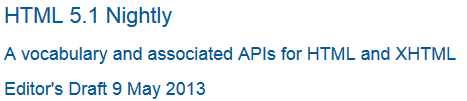

Common idioms without dedicated elements
Subheadings, subtitles, alternative titles and taglines
HTML does not have a dedicated mechanism for marking up subheadings, alternative titles or taglines. Here are the suggested alternatives.
h1–h6 elements must not be used to markup subheadings, subtitles, alternative titles and taglines unless intended to be the heading for a new section or subsection.
In the following example the title and subtitles of a web page are grouped using a header element.
As the author does not want the subtitles to be included the table of contents and they are not intended to signify
the start of a new section, they are marked up using p elements. A sample CSS styled rendering of the
title and subtitles is provided below the code example.
<header> <h1>HTML 5.1 Nightly</h1> <p>A vocabulary and associated APIs for HTML and XHTML</p> <p>Editor's Draft 9 May 2013</p> </header>

In the following example the subtitle of a book is on the same line as the title separated by a colon. A sample CSS styled rendering of the title and subtitle is provided below the code example.
<h1>The Lord of the Rings: The Two Towers</h1>

In the following example part of an album title is included in a span element,
allowing it to be styled differently from the rest of the title. A br element is used to
place the album title on a new line. A sample CSS styled rendering of the heading is provided
below the code example.
<h1>Ramones <br> <span>Hey! Ho! Let's Go</span> </h1>

In the following example the title and tagline for a news article are grouped using a header element.
The title is marked up using a h2 element and the tagline is in a p element. A sample CSS styled rendering of the
title and tagline is provided below the code example.
<header>
<h2>3D films set for popularity slide </h2>
<p>First drop in 3D box office projected for this year despite hotly tipped summer blockbusters,
according to Fitch Ratings report</p>
</header>

In this last example the title and taglines for a news magazine are grouped using a header element.
The title is marked up using a h1 element and the taglines are each in a p element. A sample CSS styled rendering of the
title and taglines is provided below the code example.
<header> <p>Magazine of the Decade</p> <h1>THE MONTH</h1> <p>The Best of UK and Foreign Media</p> </header>
Bread crumb navigation
This specification does not provide a machine-readable way of describing bread-crumb navigation
menus. Authors are encouraged to markup bread-crumb navigation as a list. The nav element can be used to mark the list
containing links as being a navigation block.
In the following example, the current page can be reached via the path indicated. The path is indicated using the right arrow symbol "→". A text label is provided to give the user context. The links are structured as a list, which provides users with an indication of item number.
<nav> <h2>You are here:</h2> <ul id="navlist"> <li><a href="/">Main</a> →</li> <li><a href="/products/">Products</a> →</li> <li><a href="/products/dishwashers/">Dishwashers</a> →</li> <li><a>Second hand</a></li> </ul> </nav>
The breadcrumb code example could be styled as a horizontal list using CSS:

The use of the right angle bracket symbol ">" to indicate path direction is discouraged as its meaning, in the context used, is not clearly conveyed to all users.
Tag clouds
This specification does not define any markup specifically for marking up lists
of keywords that apply to a group of pages (also known as tag clouds). In general, authors
are encouraged to either mark up such lists using ul elements with explicit inline
counts that are then hidden and turned into a presentational effect using a style sheet, or to use
SVG.
Here, three tags are included in a short tag cloud:
<style>
@media screen, print, handheld, tv {
/* should be ignored by non-visual browsers */
.tag-cloud > li > span { display: none; }
.tag-cloud > li { display: inline; }
.tag-cloud-1 { font-size: 0.7em; }
.tag-cloud-2 { font-size: 0.9em; }
.tag-cloud-3 { font-size: 1.1em; }
.tag-cloud-4 { font-size: 1.3em; }
.tag-cloud-5 { font-size: 1.5em; }
}
</style>
...
<ul class="tag-cloud">
<li class="tag-cloud-4"><a title="28 instances" href="/t/apple">apple</a> <span>(popular)</span>
<li class="tag-cloud-2"><a title="6 instances" href="/t/kiwi">kiwi</a> <span>(rare)</span>
<li class="tag-cloud-5"><a title="41 instances" href="/t/pear">pear</a> <span>(very popular)</span>
</ul>
The actual frequency of each tag is given using the title
attribute. A CSS style sheet is provided to convert the markup into a cloud of differently-sized
words, but for user agents that do not support CSS or are not visual, the markup contains
annotations like "(popular)" or "(rare)" to categorise the various tags by frequency, thus
enabling all users to benefit from the information.
The ul element is used (rather than ol) because the order is not
particularly important: while the list is in fact ordered alphabetically, it would convey the
same information if ordered by, say, the length of the tag.
The tag rel-keyword is
not used on these a elements because they do not represent tags that apply
to the page itself; they are just part of an index listing the tags themselves.
Conversations
This specification does not define a specific element for marking up conversations, meeting minutes, chat transcripts, dialogues in screenplays, instant message logs, and other situations where different players take turns in discourse.
Instead, authors are encouraged to mark up conversations using p elements and
punctuation. Authors who need to mark the speaker for styling purposes are encouraged to use
span or b. Paragraphs with their text wrapped in the i
element can be used for marking up stage directions.
This example demonstrates this using an extract from Abbot and Costello's famous sketch, Who's on first:
<p> Costello: Look, you gotta first baseman? <p> Abbott: Certainly. <p> Costello: Who's playing first? <p> Abbott: That's right. <p> Costello becomes exasperated. <p> Costello: When you pay off the first baseman every month, who gets the money? <p> Abbott: Every dollar of it.
The following extract shows how an IM conversation log could be marked up, using the
data element to provide Unix timestamps for each line. Note that the timestamps are
provided in a format that the time element does not support, so the
data element is used instead (namely, Unix time_t timestamps).
Had the author wished to mark up the data using one of the date and time formats supported by the
time element, that element could have been used instead of data. This
could be advantageous as it would allow data analysis tools to detect the timestamps
unambiguously, without coordination with the page author.
<p> <data value="1319898155">14:22</data> <b>egof</b> I'm not that nerdy, I've only seen 30% of the star trek episodes <p> <data value="1319898192">14:23</data> <b>kaj</b> if you know what percentage of the star trek episodes you have seen, you are inarguably nerdy <p> <data value="1319898200">14:23</data> <b>egof</b> it's unarguably <p> <data value="1319898228">14:23</data> <i>* kaj blinks</i> <p> <data value="1319898260">14:24</data> <b>kaj</b> you are not helping your case
HTML does not have a good way to mark up graphs, so descriptions of interactive conversations
from games are more difficult to mark up. This example shows one possible convention using
dl elements to list the possible responses at each point in the conversation.
Another option to consider is describing the conversation in the form of a DOT file, and
outputting the result as an SVG image to place in the document. [[DOT]]
<p> Next, you meet a fisherman. You can say one of several greetings:
<dl>
<dt> "Hello there!"
<dd>
<p> He responds with "Hello, how may I help you?"; you can respond with:
<dl>
<dt> "I would like to buy a fish."
<dd> <p> He sells you a fish and the conversation finishes.
<dt> "Can I borrow your boat?"
<dd>
<p> He is surprised and asks "What are you offering in return?".
<dl>
<dt> "Five gold." (if you have enough)
<dt> "Ten gold." (if you have enough)
<dt> "Fifteen gold." (if you have enough)
<dd> <p> He lends you his boat. The conversation ends.
<dt> "A fish." (if you have one)
<dt> "A newspaper." (if you have one)
<dt> "A pebble." (if you have one)
<dd> <p> "No thanks", he replies. Your conversation options
at this point are the same as they were after asking to borrow
his boat, minus any options you've suggested before.
</dl>
</dd>
</dl>
</dd>
<dt> "Vote for me in the next election!"
<dd> <p> He turns away. The conversation finishes.
<dt> "Sir, are you aware that your fish are running away?"
<dd>
<p> He looks at you skeptically and says "Fish cannot run, sir".
<dl>
<dt> "You got me!"
<dd> <p> The fisherman sighs and the conversation ends.
<dt> "Only kidding."
<dd> <p> "Good one!" he retorts. Your conversation options at this
point are the same as those following "Hello there!" above.
<dt> "Oh, then what are they doing?"
<dd> <p> He looks at his fish, giving you an opportunity to steal
his boat, which you do. The conversation ends.
</dl>
</dd>
</dl>
In some games, conversations are simpler: each character merely has a fixed set of lines that they say. In this example, a game FAQ/walkthrough lists some of the known possible responses for each character:
<section> <h1>Dialogue</h1> <p><small>Some characters repeat their lines in order each time you interact with them, others randomly pick from amongst their lines. Those who respond in order have numbered entries in the lists below.</small> <h2>The Shopkeeper</h2> <ul> <li>How may I help you? <li>Fresh apples! <li>A loaf of bread for madam? </ul> <h2>The pilot</h2> <p>Before the accident: <ul> </li>I'm about to fly out, sorry! </li>Sorry, I'm just waiting for flight clearance and then I'll be off! </ul> <p>After the accident: <ol> <li>I'm about to fly out, sorry! <li>Ok, I'm not leaving right now, my plane is being cleaned. <li>Ok, it's not being cleaned, it needs a minor repair first. <li>Ok, ok, stop bothering me! Truth is, I had a crash. </ol> <h2>Clan Leader</h2> <p>During the first clan meeting: <ul> <li>Hey, have you seen my daughter? I bet she's up to something nefarious again... <li>Nice weather we're having today, eh? <li>The name is Bailey, Jeff Bailey. How can I help you today? <li>A glass of water? Fresh from the well! </ul> <p>After the earthquake: <ol> <li>Everyone is safe in the shelter, we just have to put out the fire! <li>I'll go and tell the fire brigade, you keep hosing it down! </ol> </section>
Footnotes
HTML does not have a dedicated mechanism for marking up footnotes. Here are the suggested alternatives.
For short inline annotations, the title attribute could be used.
In this example, two parts of a dialogue are annotated with footnote-like content using the
title attribute.
<p> <b>Customer</b>: Hello! I wish to register a complaint. Hello. Miss? <p> <b>Shopkeeper</b>: <span title="Colloquial pronunciation of 'What do you'" >Watcha</span> mean, miss? <p> <b>Customer</b>: Uh, I'm sorry, I have a cold. I wish to make a complaint. <p> <b>Shopkeeper</b>: Sorry, <span title="This is, of course, a lie.">we're closing for lunch</span>.
Unfortunately, relying on the title attribute is
currently discouraged as many user agents do not expose the attribute in an accessible manner as
required by this specification (e.g. requiring a pointing device such as a mouse to cause a
tooltip to appear, which excludes keyboard-only users and touch-only users, such as anyone with a
modern phone or tablet).
If the title attribute is used, CSS can used to
draw the reader's attention to the elements with the attribute.
For example, the following CSS places a dashed line below elements that have a title attribute.
[title] { border-bottom: thin dashed; }
For longer annotations, the a element should be used, pointing to an element later
in the document. The convention is that the contents of the link be a number in square
brackets.
In this example, a footnote in the dialogue links to a paragraph below the dialogue. The paragraph then reciprocally links back to the dialogue, allowing the user to return to the location of the footnote.
<p> Announcer: Number 16: The <i>hand</i>. <p> Interviewer: Good evening. I have with me in the studio tonight Mr Norman St John Polevaulter, who for the past few years has been contradicting people. Mr Polevaulter, why <em>do</em> you contradict people? <p> Norman: I don't. <sup><a href="#fn1" id="r1">[1]</a></sup> <p> Interviewer: You told me you did! ... <section> <p id="fn1"><a href="#r1">[1]</a> This is, naturally, a lie, but paradoxically if it were true he could not say so without contradicting the interviewer and thus making it false.</p> </section>
For side notes, longer annotations that apply to entire sections of the text rather than just
specific words or sentences, the aside element should be used.
In this example, a sidebar is given after a dialogue, giving it some context.
<p> <span class="speaker">Customer</span>: I will not buy this record, it is scratched. <p> <span class="speaker">Shopkeeper</span>: I'm sorry? <p> <span class="speaker">Customer</span>: I will not buy this record, it is scratched. <p> <span class="speaker">Shopkeeper</span>: No no no, this's'a tobacconist's. <aside> <p>In 1970, the British Empire lay in ruins, and foreign nationalists frequented the streets — many of them Hungarians (not the streets — the foreign nationals). Sadly, Alexander Yalt has been publishing incompetently-written phrase books. </aside>
For figures or tables, footnotes can be included in the relevant figcaption or
caption element, or in surrounding prose.
In this example, a table has cells with footnotes that are given in prose. A
figure element is used to give a single legend to the combination of the table and
its footnotes.
<figure> <figcaption>Table 1. Alternative activities for knights.</figcaption> <table> <tr> <th> Activity <th> Location <th> Cost <tr> <td> Dance <td> Wherever possible <td> £0<sup><a href="#fn1">1</a></sup> <tr> <td> Routines, chorus scenes<sup><a href="#fn2">2</a></sup> <td> Undisclosed <td> Undisclosed <tr> <td> Dining<sup><a href="#fn3">3</a></sup> <td> Camelot <td> Cost of ham, jam, and spam<sup><a href="#fn4">4</a></sup> </table> <p id="fn1">1. Assumed.</p> <p id="fn2">2. Footwork impeccable.</p> <p id="fn3">3. Quality described as "well".</p> <p id="fn4">4. A lot.</p> </figure>